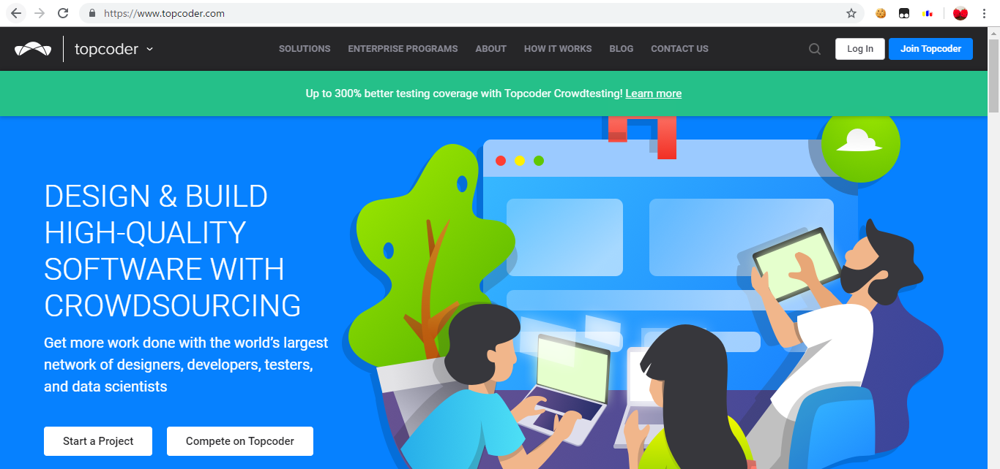
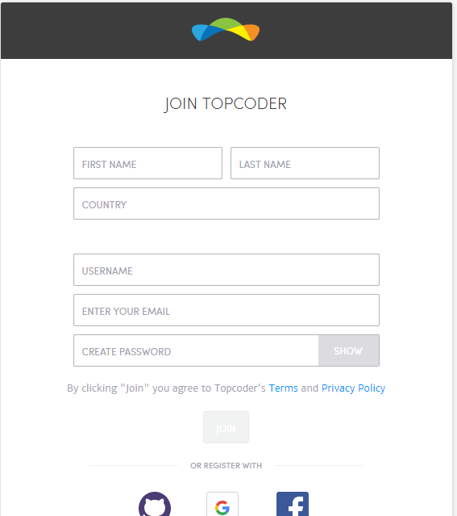

Topcoderは、2001年から長く続く歴史のある国際的なプログラミングコンテストサイトで、さらに今も世界有数のプログラミングコンテストサイトとなっています。Topcoderでは、SRMやMarathon Matchという競技プログラミングのコンテストのみならず、いろいろなコンテストを開催しています。
まず言っておきたいのは、Topcoderは競技プログラミングだけのサイトではなく、さらにDesign、Development、Data Scienceの分野があり、ウェブサイトが必然的に複雑になってしまうということです。なので、今TopcoderのSRMに参加するシンプルな方法や知っておくべきことをここに書きます。
これは2019年7月17日時点のものです。数年たったら変化しているかもしれないことにご注意ください。
Topcoderのユーザー登録の方法を今から説明します。まず、Topcoderのウェブサイトは https://www.topcoder.com/ です。このページに移動すると、次のような画面が出てきます。
ユーザー登録をするためには、右上にある「Join Topcoder」のボタンをクリックしてください。
その後「Become a member」をクリックすると、次のようなページが出てきます。
このページは、https://accounts.topcoder.com/member/registration という場所です。
ここでは、ユーザー登録をするフォームがあり、次の6つを入力しなければなりません。
その後、入力したメールアドレスに確認用メールが届くと思うのでこれで認証をします。
これでユーザー登録ができました。
Topcoder の SRM に参加したり、過去の問題を解いたりするときに、Topcoderの競技プログラミングの競技場 - 「Topcoder Arena」が必要になってきます。最近ウェブサイト上で動く競技場 Web Arena もありますが、新しいバージョンがまだできていないので、Applet Arena の方を使うことをお勧めします。
ここで、Applet Arena の入手方法・使用方法を説明します。
まず、Applet Arena を使うためには、Java の環境が必要になってくるので、Java の環境がない人は https://java.com/en/download/win10.jsp などから Java 環境をダウンロードしインストールしましょう。
次に、Applet Arena のファイルをダウンロードします。最新版は http://www.topcoder.com/contest/arena/ContestAppletProd7.2.jnlp からダウンロードできます。
Applet Arena を開くと、次のような画面が出てきます。

「Username」のところにユーザー名、「Password」のところにTopcoderのパスワードを入れましょう。そして、「GO」を押すとログインが完了します (まれに数分くらいかかることがあります)

この画面がTopcoder Applet Arenaのロビーです。この競技場でSRMに参加したりSRMの過去問を解いたりできます。